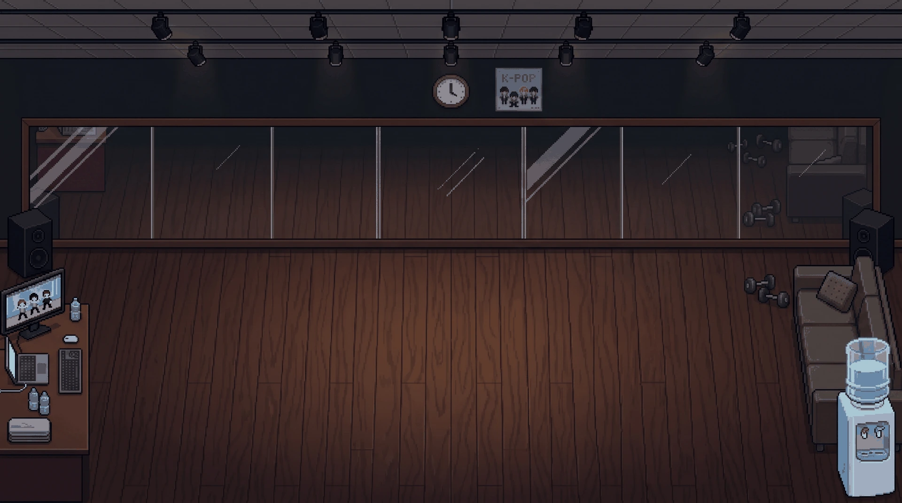
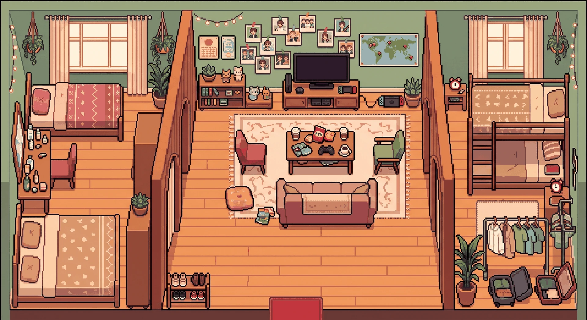
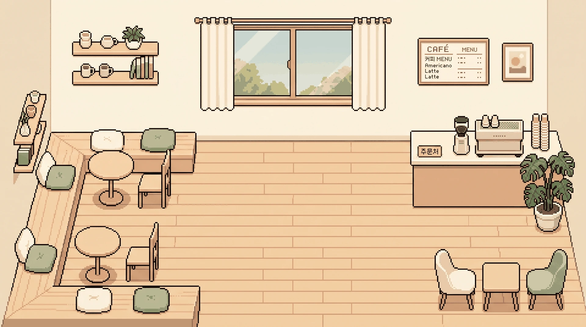
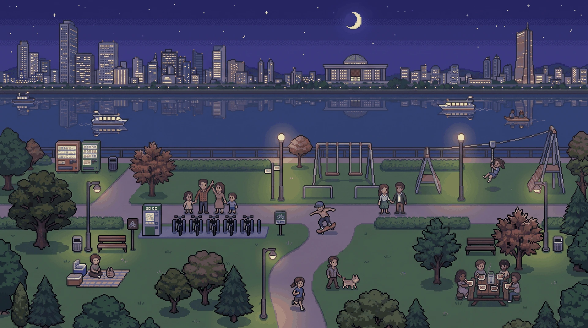
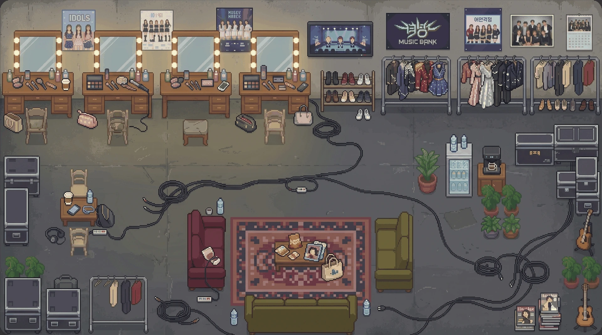
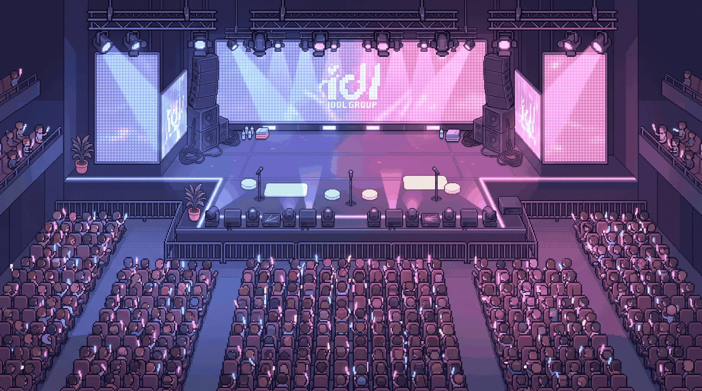

项目概述
一句话：你以圈内工作人员的身份，进入一座会自己运转的小岛，照看几组偶像的日常 —— 走近她、满足一个小需求、陪她走过重头戏，一段由 AI 现场生成的关系就此展开。
它把两种玩法缝在一起：《Tomodachi Life》的「登记入住 → 观察角色自己发生的事 → 满足她的请求」循环，和大语言模型带来的、几乎无上限的对话自由度。玩家不是在推一条写死的剧情，而是在照看一个持续运转的世界。
目标玩家
- K-pop / 偶像文化爱好者，喜欢养成、经营、恋爱模拟；
- 喜欢《Tomodachi Life》《星露谷》这类「世界自己会过日子」的沙盒；
- 对 AI 生成叙事、和角色自由对话感兴趣的玩家。
差异化
市面上的 AI 对话产品多是「一个聊天框」，缺乏世界感与后果；传统养成游戏则对话僵硬、分支有限。本作用确定性模拟提供连续可信的世界与可结算的后果，用生成式 AI提供当下这一刻的自由，两者互补。
设计理念与核心体验
游戏掌管时钟与世界状态，AI 只演当下这一刻，并提出小幅改动。
这条原则来自对《星露谷》《Tomodachi Life》的拆解：时间由游戏推进而非对话推进；每次对话只是世界里的「一个片刻」；重头戏（心动事件）= 条件达成 + 恰当的时间地点。据此，本作把「时间、日程、地点、好感数值、打歌成绩、里程碑触发」全部交给代码掌管，AI 只负责把「此刻这一场」演好。
三条体验支柱
① 世界自己会过日子
偶像有自己的作息与档期，你不在场时她们照样练习、打歌、去外地、彼此发生关系。你是照看者，不是编剧。
② 满足小需求，攒出大时刻
日常是「头顶冒气泡 → 满足一个小需求」的轻互动；累积到位，则触发一场专门为你写的、更长更正式的重头戏。轻重节奏交替。
③ 情感能被兑现
陪伴与应援不是空转：士气会通过打歌成绩变成真实名次，关系会沉淀成结局与年鉴。投入看得见回报。
核心玩法循环
一个「时段」内的基本循环：
每人每时段有 1 次深度互动机会（行动点），用掉后只能闲聊；推进时段自动恢复。行动点只在 AI 成功返回后才扣除，失败不烧机会。
世界系统
4.1 时间
时间以「天 / 时段」为单位推进。一天分 早、午、晚 三个时段；一「年」= 52 周 × 7 天。世界日（worldDay）是唯一时间锚点，AI 不得自行跳时间、换场、补演。
4.2 地点
共 12 个场景，分公开（可自由到达）与私密（受身份/关系限制）：
| 类型 | 地点 |
|---|---|
| 公开 | 咖啡厅、商圈、汉江、便利店、打歌舞台、演唱会 |
| 工作 | 练习室、后台待机室、综艺录制棚 |
| 私密 | 宿舍、天台 |
| 在外 | 巡演·在外地 / 行程中·联系不上（不可约） |
4.3 日程系统
偶像的行程按团用确定性哈希排布，保证「同团成员在团体日严格同进同出」：
- 团体日（约 78% 的日子）：全团一起练习 / 打歌 / 录综艺 / 演唱会 / 巡演；
- 自由日：各自散开去咖啡厅、汉江、天台等 —— 这是单独约人的最佳时机；
- 在外地 / 行程中：线下约不到，只能通过手机联系。
因为是确定性哈希（按 团名|天 计算），同一存档里日程稳定可复现，玩家能规划。
4.4 大事件年历
每个团一年有确定的大档期，开局就能在日历上看见，产生目标感：上半年回归、下半年回归、巡演、年末颁奖季。回归打歌期里固定每周两次打歌日。
角色系统
5.1 角色数据模型
每位偶像不是一句人设，而是一份结构化档案，全部喂给 AI 以保证「演得像她」：
| 字段 | 作用 |
|---|---|
| publicPersona | 公开人设（媒体前的样子） |
| realPersonality | 底色 + 软处（真实性格，含如何走进她） |
| speechStyle | 说话风格：口头禅 / 句子长短 / 语气词 |
| secret | 一个秘密 / 软肋，留给阶段突破时揭示 |
| affection | 好感度 |
| careerPressure / exposure… | 事业压力、公司警觉度等状态 |
| initialRelationships | 与其他成员的初始关系（撑起爱豆↔爱豆关系网） |
为对抗「玛丽苏」式失真，Prompt 里内置了 13 条写作禁令（禁止无理由倒贴、秒沦陷、降智捧场等）。
5.2 Demo 阵容：三团九人
内置三个风格不同的原创女团，性格无一重复，用于一键 Demo / 展示：
| 团 / 概念 | 成员（定位 · 性格） |
|---|---|
| STELLA 冷冽都市 | 江予昭（队长·冰山掌控）／温野（主舞·热烈直球）／白露（忙内·慵懒毒舌） |
| HALO 暗色高级 | 顾樘（队长·优雅疏离）／叶知秋（主舞·危险直球）／苏芮（忙内·敏感深情） |
| LUMÉE 明亮青春 | 罗一诺（队长·元气感恩）／千惠（主舞·日系职业感）／沈芷（忙内·软萌辛辣rap） |
三人起始好感各异（8–42），且秘密互相勾连（如忙内偷偷最黏队长、队长当年险被淘汰是忙内保下的），一进世界即有关系层次。
5.3 玩家身份
建号时选身份，决定开场地点与起始好感下限：
| 身份 | 开场 / 起始 |
|---|---|
| 圈内工作人员 | 能进后台 / 练习室等工作场景，从零好感起步 |
| 普通粉丝 | 只能在公开场合接触 |
| 公寓同栋住户 | 日常偶遇的近距离 |
| 青梅竹马 | 咖啡厅开场，起始好感 40，一开始就有底子 |
| 现任女友 | 宿舍开场，起始好感 62，玩「维持」而非「攻略」 |
关系型身份（青梅竹马 / 现任女友）会落在玩家下一步选择的「自担」身上 —— 选谁，就是谁的青梅竹马。
5.4 角色创建与捏脸
玩家可捏自己的形象；自担来源分三档：女团 / 男团（即将开放）/ 自己创造。自建角色可填性格、说话风格、秘密、起始好感与外观，之后完全按普通成员参与世界（日程 / 关系 / 里程碑）。
关系与情感线
6.1 好感度
好感只在「真的发生了什么」时才变：敷衍、普通寒暄、她没心情、只是打了个照面，一律 +0（保持不变）。严禁「没接触也加好感」。每轮变化以飘字反馈给玩家。
6.2 关系意图
玩家对每位偶像可设意图：攻略 / 朋友 / 撮合。意图切换会切 Prompt 模式，避免「明明只想做朋友，AI 一直往暧昧推」。
6.3 里程碑 / 阶段突破
好感与信任累积到位，触发「重头戏」。触发前，该偶像头顶会亮起 ⚡ 金光预兆（"她今天不太一样"），重头戏写得更长更正式，并会揭示她的 secret。里程碑客户端去重记录，不依赖 AI 回显，保证唯一触发。
| 里程碑 | 含义 |
|---|---|
| vulnerable | 第一次卸下防备 / 露出软处 |
| boundary | 关系越过一道界线 |
| confess_ready | 可以走向表白 / 确认关系 |
6.4 撮合
玩家也可当红娘：标记想撮合的两位偶像，围观她们相遇时留意火花；推进时段时，不在场的偶像对也会在后台按关系网结算，事后以岛屿动态播报。
6.5 结局与年鉴
长期发展沉淀成结局：走到表白 / 确认关系的 romance 结局，以及曝光爆表、脚踏多条船导致的 BE（坏结局）。年终以「年鉴」回顾这一年发生的里程碑与大事记，让「成长」看得见。
6.6 长期记忆
每位偶像有一份滚动记忆档案，只把摘要注入 Prompt（而非全部历史），既让她「记得你说过的事」，又控制 token 与超时。
需求与碎片剧场
这是 Tomodachi Life 式的「心跳」。每位偶像在某时段有没有需求、是什么需求，用便宜的确定性哈希算出（约 45% 概率有），不调 AI、不烧钱；只有当玩家点开头顶冒泡的偶像，才进入一段短小的「碎片剧场」，此时 AI 才被调用。
共 7 类需求，并按性格加权（爱吃的更常饿、内耗型更常有心事）：
| 需求 | 示例 |
|---|---|
| 想吃东西 / 闲得慌 | 馋某样具体的吃的 / 想找人陪 |
| 有心事 / 想要个东西 | 压着没说的事 / 惦记某样东西 |
| 想让你牵线 | 想和某人拉近，不好意思开口（撮合钩子） |
| 想分享 / 心情很好 | 拉你看新歌 / 单纯想一起高兴 |
没需求时头顶也有一个随时段轻微漂移的心情表情，让每个人头上「总有点东西」，很 Tomodachi。
演艺事业系统
8.1 打歌一位
名次由代码结算，AI 只负责旁白 / 获奖感言 —— 这样成绩才有连续性，玩家投入才能兑现成排名。评分由五项构成：
| 维度 | 受什么影响 |
|---|---|
| 数字音源 / 实体 / SNS / 预投票 | 歌曲底子（本次回归固定）+ 随机波动 + 玩家应援 |
| 放送（舞台完成度） | 受士气影响 —— 这是情感线兑现的出口 |
玩家的应援打投（占用行动点）累积到成绩里；多个团同期打歌会各自结算、分别出名次。
8.2 曝光度
偷偷来往会累积「曝光度」（0–100），发私信太勤、行为高调都会涨；低调则每推进一时段被动回落。曝光爆表是 BE 的触发条件之一。
仿真手机
把「隔着屏幕的偶像感」做进玩法。theqoo 热搜、KakaoTalk 私信、Weverse、bubble 内容不进对话流，而是收进手机里的对应应用，做成仿真信息流。玩家可发私信（不占行动点，但每天有条数上限；发太勤涨曝光度），偶像不一定秒回、忙时更慢。
AI 叙事架构
本作的核心工程价值所在。
10.1 混合叙事
「游戏掌钟、AI 演当下」：用 FNV-1a 确定性哈希驱动时间 / 日程 / 需求 / 打歌成绩 / 关系数值 —— 世界连续、可控、可复现；LLM 只生成当下单场对话 —— 自由、有人味。两者互补，同时大幅降低 token 消耗与超时概率。
10.2 结构化输出协议
要求模型在叙事之外，用约定标签输出结构化数据，前端解析后落库：
- 状态快照 / 关系变化：好感、关系亲密度 / 张力的增量；
- 里程碑 / 事件 ID：触发了哪个重头戏 / 事件；
- 手机标签：KKT / Weverse / bubble / theqoo / 角色卡 内容分流到手机。
这样自由文本就变成了可持久化、可结算的游戏状态。
10.3 对话纪律
- 实时对话：严禁 AI 自行跳时间 / 换场 / 补演，时间只由游戏推进；
- 强制脱出：一次相遇最多聊固定轮数，之后给「结束本次互动」，避免无限拖场；
- 意图锁定：攻略 / 撮合 走两套 Prompt，避免跑偏。
10.4 稳定性
DeepSeek 经 Serverless 代理隐藏密钥；针对慢生成与网络抖动做指数退避重试（服务端 55s 超时→干净 504）与确定性兜底（SNAPSHOT 缺失也保底更新），避免「AI 明明返回了、界面却报错」。
美术与呈现
视觉基调为「墨金」：深墨底 + 金箔点缀 + 少量玫瑰粉（好感）与青紫（偶像 / 玩家）。两套视图：俯视世界（Tomodachi 式小人走动、头顶气泡）与 VN 对话（立绘 + 场景背景）。角色形象为可捏脸的 2D sprite（发型 / 配饰 / 服装分层）。
实机画面
场景原画






本地化与无障碍
- 简繁双语：全文案双语，建号时选择；
- 移动端：竖屏时提示横屏游玩（世界为宽屏）；
- 新手引导：首次进世界给四条要点提示（气泡 / 金光 / 推进时段 / 右上角手机与动态）。
一键 Demo 与自动演示
为演示 / 录像 / 简历展示：
- 一键 Demo：建号第一步一个按钮，预置三团九人直接进世界；
- 自动演示（自动驾驶）：开启后世界自行推进 —— 在场就自动走近偶像演一段、有选项自动选、聊够自动脱出、没人可撩就自动换地点 / 推进时段。世界底部有「点击停止」开关，随时可接管。
技术实现与部署
技术栈
React 19 · TypeScript · Vite · Tailwind CSS v4 · Framer Motion · DeepSeek LLM · Serverless（Vercel Functions）。核心逻辑：确定性哈希调度、结构化输出解析、客户端状态机与本地存档。
部署
- 海外 / 主线：Vercel（Git 推送自动部署，Serverless 隐藏密钥）；
- 国内直连：零依赖自托管服务
server.mjs（一个进程托管静态页 + 代理 DeepSeek）+ Dockerfile，可部署到香港轻量服务器 / 容器平台；纯展示页可走对象存储静态托管。
内容规模与路线图
已实现
- 世界 / 时间 / 日程 / 12 场景；三团九人 + 自建角色；
- 好感 / 意图 / 里程碑 / 撮合 / 结局 / 年鉴 / 长期记忆；
- 需求气泡 + 碎片剧场；打歌一位；曝光度；仿真手机；
- 结构化 AI 协议 + 稳定性重试兜底；一键 Demo + 自动演示；简繁双语。
计划中
- 男团上线（当前为「即将开放」占位）；更多团与角色；
- 更丰富的岛屿自主事件与跨团八卦；
- 成就 / 图鉴、更多结局分支；音效与 BGM。
术语表
| 术语 | 释义 |
|---|---|
| 需求气泡 | 偶像头顶的小需求提示，点开进入碎片剧场 |
| 碎片剧场 | 满足需求触发的一段短小现场戏（此时才调 AI） |
| 重头戏 / 里程碑 | 好感攒够触发的更长更正式的关键场，含金光预兆 |
| 行动点 | 每人每时段 1 次深度互动机会 |
| 打歌一位 | 音乐节目排名，由代码结算 |
| 曝光度 | 偷偷来往的风险值，爆表可致 BE |
| 自担 | 玩家主要关注 / 攻略的偶像 |
| 岛屿动态 | 推进时段后，不在场偶像之间自动发生的事的播报 |